CHARACTER ANIMATION · 2024

As a huge fan of the Dofus and Wakfu universes by Ankama, I decided to challenge myself with this big project based on the fabulous work of the french artist Maliki.


I did all aspects. From Modeling, Texturing, UV Mapping, Rigging, Skinning, and compositing.


During the making of this project, I used many software programs, such as ZBrush for sculpting, Maya for retopology, modeling of the asset and environment, lighting, and Nuke for compositing.


To optimize the time I had allocated for this project, I decided to use the Advanced Skeleton auto-rig system.


The compositing phase using Nuke was arguably my favorite part of this project. This stage allowed me to enhance the visual elements significantly, resulting in a more engaging and polished final piece.


Ultimately, I was able to achieve the overall appearance I envisioned and am satisfied with the outcome!
Thank you for reading, and I hope you enjoyed my 3D work.
Original art by Maliki

Software used